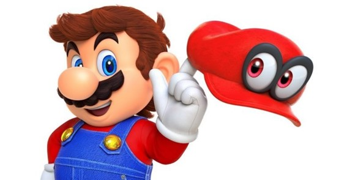

 Super Mario Bros. o Super Mario Brothers es un videojuego de plataformas, diseñado por Shigeru Miyamoto, lanzado el 13 de septiembre de 1985 y producido por la compañía Nintendo, para la consola Nintendo Entertainment System (NES). El juego describe las aventuras de los hermanos Mario y Luigi, personajes que ya protagonizaron el arcade Mario Bros. de 1983. En esta ocasión ambos deben rescatar a la Princesa Peach del Reino Champiñón que fue secuestrada por el rey de los Koopas, Bowser. A través de ocho diferentes mundos, los jugadores pueden controlar a alguno de los dos hermanos y deben enfrentarse finalmente tras los niveles correspondientes de cada mundo a los monstruos de cada castillo para rescatar a la Princesa Peach.
Super Mario Bros. fue el juego que popularizó al personaje de Mario,4 convirtiéndolo en el ícono principal de Nintendo, y uno de los personajes más reconocidos de los videojuegos, así como su hermano menor Luigi. Además, presentó por primera vez a la Princesa Peach Toadstool, Toad, Bowser, entre otros personajes. Este juego es considerado el primer videojuego de plataformas de desplazamiento lateral de Nintendo y se ha convertido en un hito debido a la trascendencia de su diseño y papel en la industria de los videojuegos.
El 13 de septiembre de 2010 se conmemoró el 25º aniversario del juego desde su salida para la Famicom en Japón, así como el 25° aniversario de la franquicia. En noviembre de 2010 la ciudad española de Zaragoza dedicó una avenida al famoso fontanero.
Super Mario Bros. tiene lugar en el pacífico Reino Champiñón donde viven hongos antropomorfos, que fue invadido por los Koopa, una tribu de tortugas. El tranquilo pueblo es convertido en piedra y ladrillos, y el reino de los champiñones se va a la ruina. La única que puede deshacer el influjo mágico de ellos es la Princesa Peach, hija del Rey Champiñón. Desafortunadamente, está en las garras del Rey Tortuga Koopa, Bowser